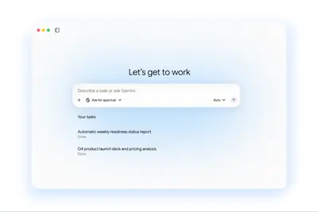
其他AI 每日新聞彙整
全部主題
其他
5 家媒體報導geminigoogleagent
Google is launching a one-stop Gemini agent for your work tasks
Google is launching a "universal" Gemini AI agent that can work across apps and devices in the background. The tool, announced as part of the Gemini at Work event on Thursday, will be available within the Gemini Enterprise app, allowing users to chat with the Gemini agent and ass
- TechCrunch AI Google brings agentic AI to Gemini, starting with businesses
- 科技新報 TechNews Google 推 Gemini agent 攻企業市場，自選合適模型、內建成本控制
- The Verge AI Google is launching a one-stop Gemini agent for your work tasks
- IT之家 谷歌云发布 Gemini Agent，定位“通用工作智能体”
- TechOrange 科技報橘 AI 模型越便宜反而越花錢？史丹佛等機構研究：近 1/3 模型成本比較出現「反轉」
2 家媒體報導xaielonmusk
Inside Elon Musk’s Midterm Spending Spree
This week on “Uncanny Valley,” we discuss where Elon Musk’s PAC is spending millions, the latest ideology Trump claims is dangerous, and the backlash against the designer behind Muse’s logo.
2 家媒體報導robothumancalifornia
AI breakthroughs in robotics won’t change your life any time soon
The story is a collaboration between MIT Technology Review and Aventine, a non-profit research foundation that creates and supports content about how technology and science are changing the way we live. A robot shaped like a human—white with a black head and torso—has been poppin
- The Verge AI California is trying to shut down robot vs. human cage matches
- MIT Technology Review AI AI breakthroughs in robotics won’t change your life any time soon
2 家媒體報導changesusagepolicy
Anthropic bans ‘abusive or cruel behavior’ toward Claude
Anthropic is making changes to its usage policy for the first time in over a year to reflect new and high-risk cases of misuse - including election interference, weapons development, surveillance, and health and financial uses. But one of the most significant changes prohibits "s
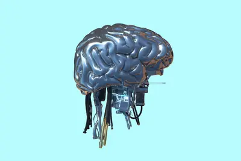
2 家媒體報導chatgptoracleturns
How Oracle turns days of work into minutes with ChatGPT and Codex
Across recruiting, engineering, and operations, Oracle turns specialist knowledge into fast, repeatable workflows with ChatGPT Work and Codex.
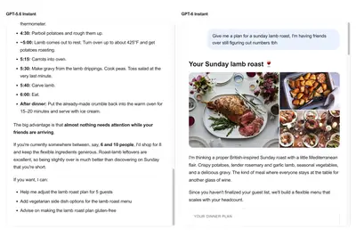
2 家媒體報導granolaofflinegoogle
Google releases a new local-first Granola competitor
Google’s new AI Edge Foresight app takes on Granola with an offline meeting note-taker that can transcribe conversations, generate notes, and answer questions using on-device AI.

2 家媒體報導manusmetatencent
China’s Manus raises over $500M in first funding round since split with Meta
Boyu Capital and IDG Capital led the funding round, and existing shareholders Tencent, HSG (formerly known as Sequoia China), ZhenFund, and others also participated.
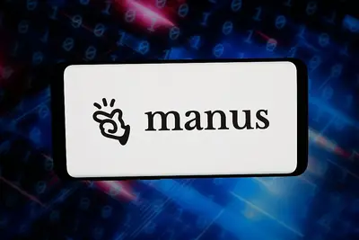
- TechCrunch AI China’s Manus raises over $500M in first funding round since split with Meta
- 科技新報 TechNews 揮別 Meta 收購破局，Manus 新輪募資狂吸 5 億美元劍指香港 IPO
2 家媒體報導haiku5.5anthropic
Anthropic推出Claude Haiku 5.5，成本降低75%、首度支援推理強度控制
Anthropic周三（10/7）推出新一代輕量級AI模型Claude Haiku 5.5，主打低成本、高速度及大量重複性工作負載。Anthropic表示，Haiku 5.5是該公司迄今速度最快、能力最強的Haiku系列模型，平均執行成本較前代降低75%，也是Haiku系列首款支援推理強度調整的模型。
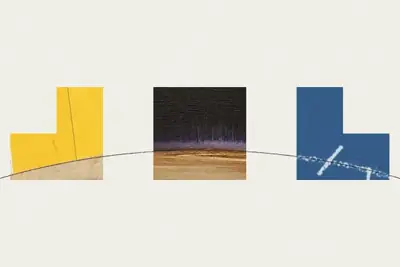
- iThome Anthropic推出Claude Haiku 5.5，成本降低75%、首度支援推理強度控制
- TechOrange 科技報橘 AI 小模型戰升溫，Anthropic 推 Haiku 5.5，價格更低、Agent 能力卻更強？
ultrafastsolgpt-6.1
OpenAI 推出 GPT-6.1 Sol Ultrafast 版：6 倍价格、最高 8 倍速度
IT之家 10 月 9 日消息，OpenAI Developers 官方宣布，OpenAI 正式在 API、Codex 和 ChatGPT Work 中推出 GPT-6.1 Sol 的 Ultrafast 版本。 该版本运行速度最高可达 Sol 标准版（Sol Standard）的 8 倍 ，定价为标准版的 6 倍 （每百万 tokens 输入 12 美元 （IT之家注：现汇率约合 80.5 元人民币） ，每百万 tokens 输出 60 美元 （现汇率约合 402.7 元人民币） ）。 在 Codex 和 ChatGPT Work 中，该功能现已面向
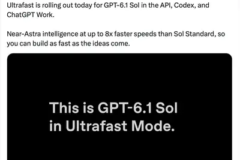
alibaba2023
阿里巴巴蔡崇信：五年后 AI 将如今天的互联网，融入社会的每个环节
北京时间 10 月 7 日晚，阿里巴巴集团主席蔡崇信在意大利都灵出席国际科技与投资盛会 Wave by Vento 2026，围绕 AI 的应用价值、阿里巴巴的全栈 AI 布局，以及未来 AI 的发展前景展开交流。 蔡崇信预判，未来 AI 将从显性话题转为隐性基础设施。“ 五年后，人们可能不再单独讨论 AI，因为它将像今天的互联网一样，融入业务的每个环节 。相关术语可能会随技术普及程度而演变，但 AI 作为根本性的技术突破，将持续影响商业与社会。” 在交流中，蔡崇信重点分享了阿里巴巴的 AI 发展战略，他以 2023 年为分界，将公司发展划分为两个阶段。
3 名遭解雇 OpenAI 研究员发公开信，称公司做法或引发“寒蝉效应”
IT之家 10 月 9 日消息，上周突然被解雇的 OpenAI 三名前研究人员米基塔 · 巴莱斯尼、托梅克 · 科尔巴克和贾斯敏 · 王今天（9 日）发表公开信。信中提到，担心此举会让其他员工不敢公开表达意见，对 OpenAI 的企业文化产生“寒蝉效应”。 三人在题为《OpenAI 无法独自确保 AI 安全》的公开信中指出， OpenAI“不是一家普通公司” ，员工能够放心地与外部机构合作解决安全问题，是 OpenAI 工作文化的重要组成部分。 公开信由此前从事 AI 对齐研究的巴莱斯尼发布在社交媒体上，收信人为 OpenAI 的各安全委员会。另外两名署
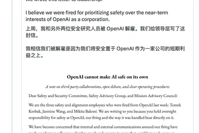
regulationanthropicclaude
Anthropic 修订使用政策，首次禁止用户虐待 Claude AI 模型
IT之家 10 月 9 日消息，科技媒体 The Verge 今天（10 月 9 日）发布博文，报道称 Anthropic 修订 Claude 使用政策，将于 2026 年 11 月 12 日生效， 首次加入禁止“持续且不必要的虐待或残忍行为”条款。该规则适用于用户反复、无明显目的地对模型实施残忍行为的情况。 执行机制方面，Anthropic 表示主要方式为终止对话，但并未明确时候会引入用户封禁等进一步措施，并强调该条款不适用于常见抱怨、质疑、黑暗创作主题及模型测试与研究。IT之家附上相关截图如下： Anthropic 扩大武器禁令范围，涵盖使武器运转的
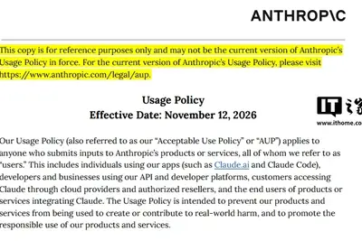
museapple
Meta 首席 AI 官汪滔：不要指望 Muse 会自动帮你赚 1 万美元
IT之家 10 月 9 日消息，据《商业内幕》今天（9 日）凌晨报道，Meta 首席 AI 官汪滔（Alexandr Wang）将会继续改进 Muse。他同时提醒，用户想让智能体帮忙赚钱，自己也得付出一点努力。“我们一直在想办法提升智能体的能力，让它们能不断处理更复杂的任务。” 汪滔谈到了网上流行的一类提示词：一些用户要求智能体 帮自己赚到指定金额 。“我觉得挺有意思，很多人直接跟自己的 Muse 说：‘帮我赚 1 万美元 （IT之家注：现汇率约合 67,125 元人民币） 。’当然，不是谁提个要求，Muse 就能帮他赚到 1 万美元。想赚 1 万美元，
amazon500200
OpenAI 年化营收被曝接近 500 亿美元，比预期少了约 200 亿
IT之家 10 月 9 日消息，据金融时报报道，一份向 OpenAI 投资者披露的最新财务文件显示，其实际年化营收相较于公司此前释放的 预期缺口达约 200 亿美元 （IT之家注：现汇率约合 1,342.49 亿元人民币） 。 OpenAI 向投资者最新披露，截至 9 月底，其年化营收正逼近 500 亿美元 （现汇率约合 3,356.23 亿元人民币） 。这一数字大幅低于主流媒体上月的报道，彼时媒体根据此前向投资人提供的数据，估算其年化营收高达 700 亿美元 （现汇率约合 4,698.72 亿元人民币） 。 知情人士透露，这一数据差异源于投资人试图将
securityopen-sourceprojects
Anthropic launches free AI security scans for open-source projects
Anthropic's offering to help open-source projects track down security vulnerabilities with a new service called OSS Scanner. It says open-source projects that opt-in will get "thorough, periodic security scans by our strongest models at no cost." That could mean open-source proje
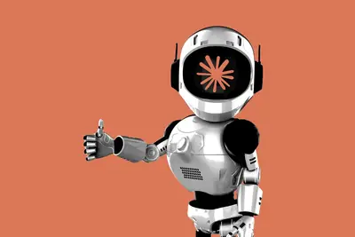
developersomniversefrontier
Into the Omniverse: How Developers Turn Ideas Into Simulations With Frontier AI Agents
Turning a simulation idea into a working application means assembling assets, connecting physics and rendering, and checking that the scene behaves as intended. Developers are combining frontier AI models with NVIDIA Omniverse libraries to help carry out that work — building appl
elizabethholmeswebsite
Pretend you’re sitting at Elizabeth Holmes’ desk on this weirdly detailed website
With over a thousand emails, slides, texts, and documents from the United States v. Elizabeth Holmes trial, Extend engineer Bo Lau created a website that simulates what it might have been like to rifle through the Theranos founder's desk.
safetydisputechilling
Fired OpenAI safety researchers dispute misconduct claims, warn of chilling effect
Three fired OpenAI safety researchers dispute allegations of mishandling sensitive information, warning in an open letter that their dismissals are creating a chilling effect on the company’s AI safety culture.

shedesignedcame
She Designed Meta’s New AI Logo. Then Came the Hate
Jessica Hische knew working for Meta might upset some people. But she didn’t anticipate just how angry they would get.
hbmstorageshrink
Got a Microsoft 365 subscription? Your storage is about to shrink
Today, shared Microsoft 365 plans include 1 TB of OneDrive cloud storage for every family member. Microsoft is about to shrink that allotment dramatically.
affleckbennerd
Ben Affleck is an AI nerd, and the internet is impressed
Ben Affleck is going viral for his deep knowledge of AI, from neural networks and transformers to open weights. The actor, who sold his AI filmmaking startup to Netflix earlier this year, is proving he's more than just a Hollywood star.
- TechCrunch AI Ben Affleck is an AI nerd, and the internet is impressed
valuationleaderboardpopular
Popular AI leaderboard Arena nearly doubles valuation to $3.1B valuation in 10 months
The company behind the popular LMArena leaderboard has raised $200 million led by Lightspeed and Khosla, and is now measuring AI models on alignment issues such as lying.
lesspreviouslyrevenue
OpenAI’s revenue is reportedly $20 billion less than previously projected
It had previously been reported that the AI lab's annualized revenue was some $70 billion, but a new report claims it's a whole lot less than that.
matharenstandards
OpenAI’s math solutions aren’t meeting the field’s standards yet
OpenAI's flood of proofs deviated from the guidelines set by a group of mathematical researchers consulted by the frontier lab.
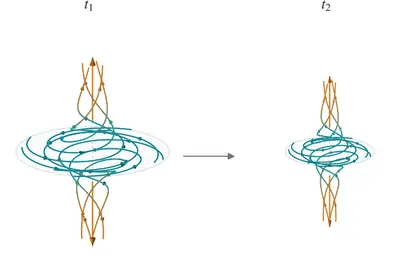
usapublisherbecomes
USA Today becomes the latest publisher to sue OpenAI
USA Today Co., along with the several local newspapers it owns, is suing OpenAI over claims that the company copied "hundreds of thousands" of articles to train its AI models, as reported earlier by Reuters. In a filing on Thursday, the publisher asks for damages of more than $25
- The Verge AI USA Today becomes the latest publisher to sue OpenAI
regulationregulatorsprotect
Regulators are trying to protect you from being fired by AI – here’s how
Regulating AI at work is happening slowly, but it’s still stuck at the state level.
naturaringfinger
Natura’s $99 smart ring puts AI agents on your finger
Natura’s $99 Interface smart ring lets you summon AI agents with the press of a finger to complete tasks, capture thoughts, and control devices — while doubling as a health tracker.
- TechCrunch AI Natura’s $99 smart ring puts AI agents on your finger
goodfiremonitorsinside-out
Goodfire says its new ‘inside-out’ monitors catch rogue AI agents at a fraction of the cost
Goodfire just launched what it says is a cheaper way to keep AI agents in check: Instead of paying a second AI to read everything an agent does, its monitors peek inside the model while it works and only call in backup when something looks fishy.
mate
余承东：未来肯定会有更多华为手机采用基于韬定律的逻辑折叠芯片
IT之家 10 月 8 日消息，在 5 月 25 日的 2026 国际电路与系统研讨会上，华为公司董事、半导体业务部总裁何庭波时隔 7 年再次回到公众视野，并在主旨演讲中首次提出半导体全新演进路径 ——“韬（τ）定律”。 这是中国在全球半导体领域首次提出指导产业发展的新原则 。 华为常务董事、产品投资评审委员会主任、终端 BG 董事长余承东在 9 月 29 日的国际媒体圆桌会议上表示，Mate 90 系列智能手机搭载了最新的麒麟 9050 Pro 芯片，整机性能较上一代提升 31%。 其中，巴龙调制解调器、图像信号处理器（ISP）、移动安全处理器（MSP
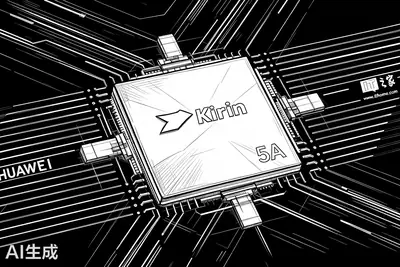
meetingsrobotchatgpt
ChatGPT Meetings外掛怎麼用？5步驟設定，免機器人自動記筆記
ChatGPT推出「Meetings」外掛Beta版，透過Mac麥克風與系統音訊收音，不必讓機器人加入通話，就能自動產出個人化摘要與待辦事項。
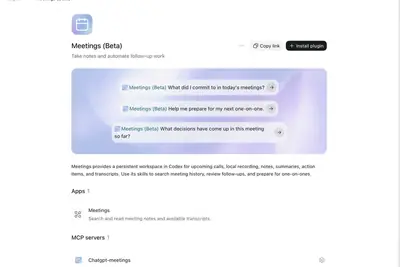
techcrunchdisruptsave
Hear from Ambrosia Energy and Bloom Energy execs on where the AI infrastructure boom is creating opportunity at TechCrunch Disrupt 2026
Ambrosia Energy CEO Ben Longmier and Bloom Energy SVP Bill Thayer join the Smart Systems Stage at TechCrunch Disrupt. Register now to save up to $100. Grab a second of the same pass to save 50%.
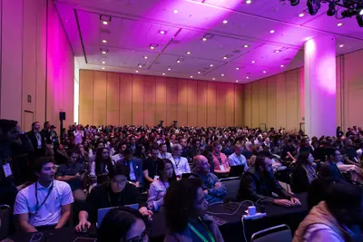
legacyfixeconomics
Can AI fix legacy IT? The ‘economics don’t hold up,’ says former IBM strategist
Vendors are pitching AI as a cure-all for legacy IT systems, but is it?
nuclearplantu.s.
The U.S. Nuclear Plant Fleet Is Leaning Into AI
If there is any place that would be off-limits to AI, the control room of a nuclear power plant certainly sounds like one. The nuclear industry is historically cautious and risk averse—understandable given the possible catastrophic consequences of an accident or a mistake. Even w
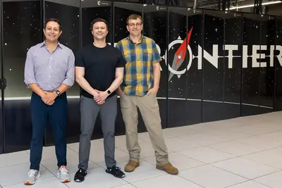
- IEEE Spectrum AI The U.S. Nuclear Plant Fleet Is Leaning Into AI
格芯与台积电签署 20 亿美元协议，在美国建立首个硅中介层生产基地
IT之家 10 月 8 日消息，格罗方德（格芯，GF）今日宣布与台积电达成一项制造协议，旨在为台积电的 CoWoS ® 先进封装生态系统建立基于美国的硅中介层供应。 根据协议，GF 将向台积电提供制造服务，并在其位于纽约州马耳他的工厂增加产能。这项为期多年、 价值 20 亿美元 （IT之家注：现汇率约合 134.25 亿元人民币） 的协议将扩大先进封装生态系统的产能，并满足人工智能和高性能计算技术日益增长的需求。该协议为随着客户需求增长而逐步扩大产能奠定了基础。 GF 计划扩建其马耳他工厂的产能，并在美国建立首个硅中介层生产基地，以支持包括嵌入式深沟槽电
tabletalexafire
亚马逊发布 Alexa Tablet 平板电脑：接替 Fire Tablet，全面支持 Alexa+ AI
IT之家 10 月 8 日消息，Amazon（亚马逊）当地时间今日正式发布了接替此前 Fire Tablet 系列的 Alexa Tablet 平板电脑。这些产品运行 Android 操作系统， 可访问完整的 Google Play 商店 。 首批 Alexa Tablet 包括三款产品：Alexa Tablet 12 Pro、Alexa Tablet 11、Alexa Tablet 8。这些型号均拥有铝合金一体成型机身，都 内置 Alexa+ 人工智能助手功能 。 Alexa Tablet 12 Pro 基于联发科技天玑 8400 处理器，配备 280
calstartupyear-old
Cal AI’s 19-year-old founder just raised $10M for his new AI startup
Zach Yadegari, the teen co-founder of popular Cal AI calorie tracking app, has launched a new personal AI agent startup that competes with Instinct, Muse, and Bee.
trustdotsrun
Can you trust Meta’s Muse or OpenAI’s Dots to run your life?
My Decoder guest today is Hayden Field, The Verge’s senior AI reporter, and we’re discussing the new wave of consumer-friendly AI agents. If you’ve been paying attention to this space, you know AI enthusiasts have been using agents for a minute now — homebrew OpenClaw setups led
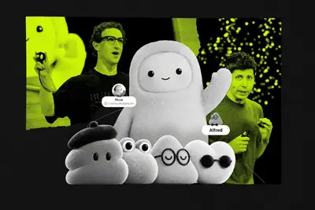
artificialwickedsatire
Artificial is a wicked satire that also sticks to the facts
At the New York Film Festival premiere of Artificial, Luca Guadagnino's satirical Sam Altman biopic, the director said onstage that "[when] someone wants to play God, that's very interesting to me." The idea of playing God, and power in general - who has it, who desperately wants
amdalphacoolblackwell
Alphacool 带来多款 GPU 单槽冷头，支持 NVIDIA、AMD 专业显卡
IT之家 10 月 8 日消息，Alphacool 当地时间今日宣布扩展其 ES 1-Slot Design 系列分体式液冷显卡单槽冷头家族， 为 4 款最新一代专业显卡提供支持 。 此次发布的冷头分别兼容 NVIDIA RTX PRO 4000 / 4500 / 6000（工作站版本）Blackwell Edition、AMD Radeon AI PRO R9700。 这 4 款冷头均采用全覆盖设计，拥有镀铬铜底和碳纤维饰面，进出水口位于末端， 适用于多卡工作站与服务器系统 。 NVIDIA RTX PRO 4000 Blackwell Edition
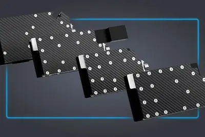
l062027box
2027 款深蓝 L06 & 深蓝 L06 追风版 10 月 9 日上市，搭载两只“龙虾”
IT之家 10 月 8 日消息，深蓝汽车今日宣布，2027 款深蓝 L06 & 深蓝 L06 追风版 10 月 9 日上市，宣称“长续航磁流变激光 AI 轿跑”。 IT之家注意到，2027 款深蓝 L06 号称搭载两只“龙虾”。深蓝汽车董事长邓承浩表示，2027 款深蓝 L06 的两只“龙虾”分别是 AI Agent 和 AI Box， 支持一句话理解车主的意图 。 此外，深蓝 L06 追风版配备全套赛道化竞速套件，包含车头立体风刃与一体式前铲、侧裙风刃造型装饰件，以及固定式真 · 碳纤维大尾翼。经空气动力学优化，整车高速状态下最高可产生 1000N 下